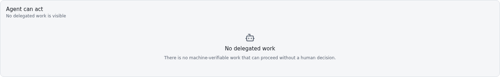
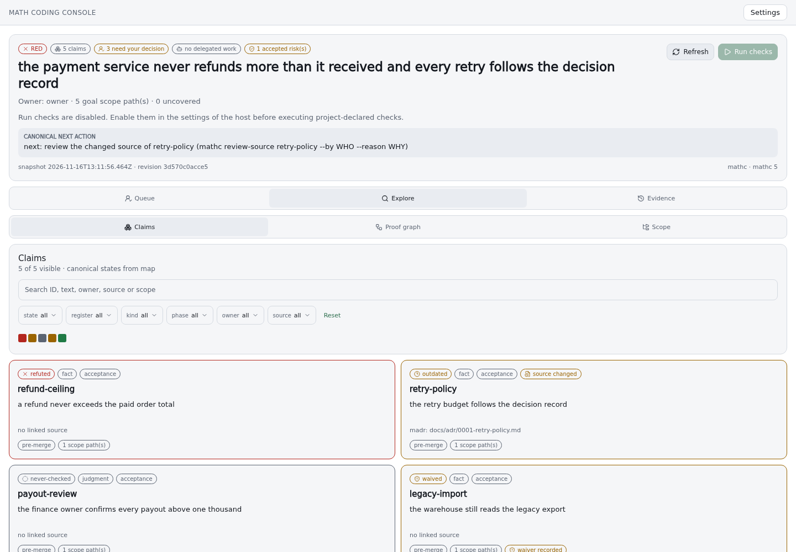
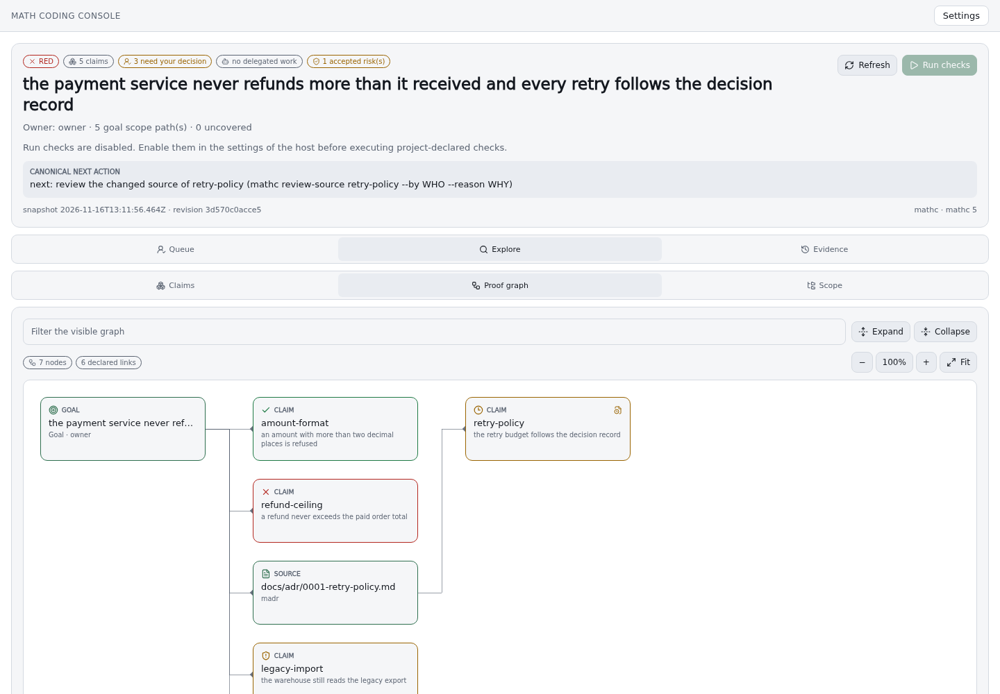
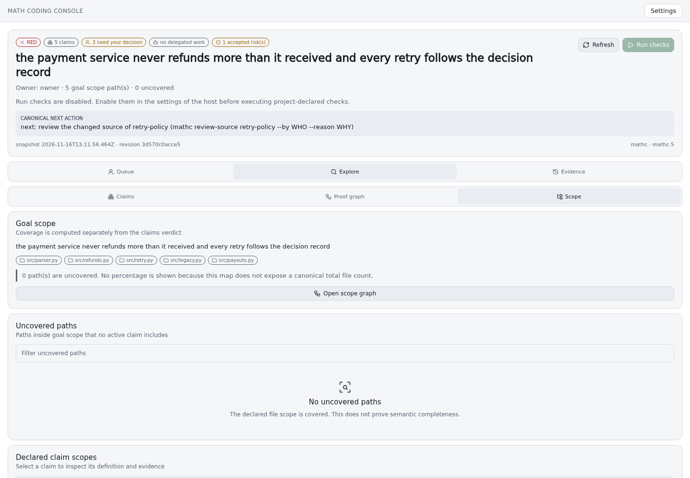
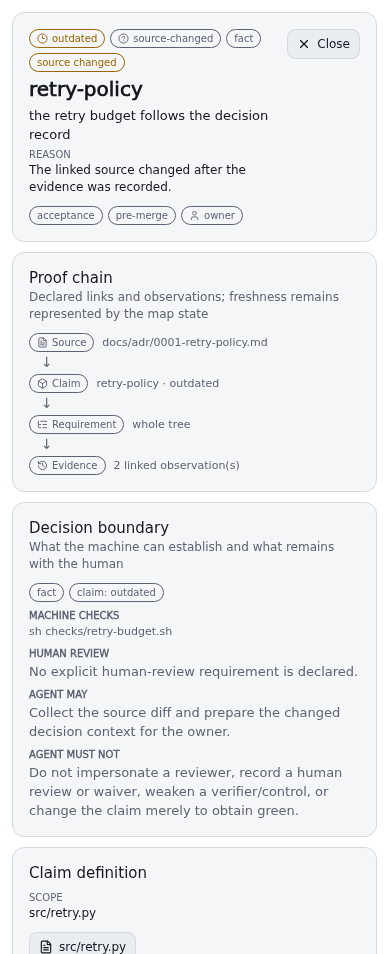
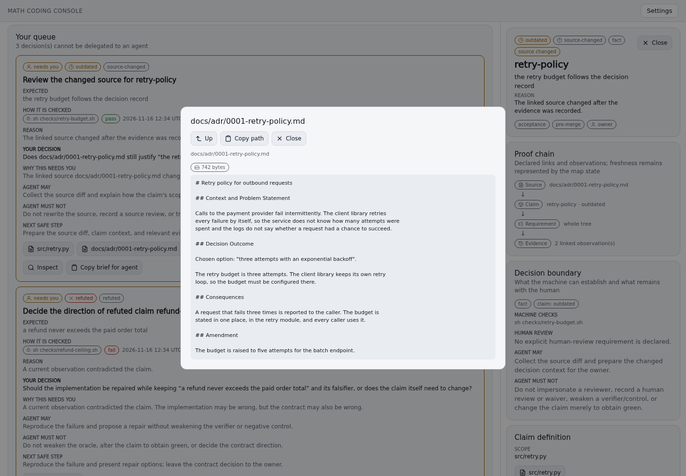

Интерфейсы
У карты инструмента один источник истины — вывод
mathc map --json. Консоль не вычисляет состояние, вердикт или
покрытие: она их читает. Консоль добавляет способ посмотреть на этот вывод.
Плагин для Paseo и локальная страница в браузере — два хоста над одним
интерфейсом, и интерфейс в обоих один и тот же.
Два хоста, один интерфейс
| слой | что это |
|---|---|
shared/ | контракты без хоста: схемы снимка, карточки утверждения, журнала, запуска, файла и настроек |
client/ | сам интерфейс: очередь человека, утверждения, граф доказательств, область, журнал наблюдений, карточка утверждения, экран настроек |
client/host/paseo.tsx | хост Paseo: примитивы, которыми может пользоваться общий интерфейс (модальное окно, поля ввода, элементы настроек, вызовы, буфер обмена, уведомления) |
console/src/browser-host.tsx | браузерный хост: те же примитивы в браузере |
server/core/operations.ts | пять операций над проектом — снимок, утверждение, наблюдения, запуск, файл — и очередь, которая их сериализует |
Плагин — это представление над mathc, а не вторая
реализация метода. Аудит клиента (npm run audit:client) проверяет,
что общий слой не импортирует пакеты хоста: это разрешено только
client/host/paseo.tsx, а локальная страница импортирует общий слой
внутрь и никогда наружу.
Что плагин добавляет в Paseo
- Панель рабочей области Math Coding — в рабочей области и в проводнике.
- Пункт в Command Center: Open Math Coding attention desk.
- Слэш-команда
/mc. - Экран настроек Attention and runtime: бинарь, только чтение при обновлении и переключатель, разрешающий запуск проверок.
Первый экран панели отвечает на три вопроса и только на три: что человек должен решить сейчас, что агент может сделать сам и какой риск уже принят. Он не отвечает числом строк.
Локальная страница в браузере
Та же консоль без Paseo: страница в браузере над тем же слоем интерфейса и тем же серверным ядром.
- Сервер слушает только адрес обратной петли и принимает один фиксированный корень проекта; пути проекта никогда не приходят из браузера.
- Настройки лежат вне проекта, в
~/.config/math-coding-console/settings.json, поэтому чтение страницы никогда не меняет живое дерево. - Превью файла остаётся внутри корня: путь относительный, без
.., symlink наружу отклоняется, размер ограничен, открывается только обычный файл. Сервер читает файл и ничего в нём не меняет. - Запуск проверок выключен по умолчанию и требует и разрешения в настройках, и второго подтверждения в интерфейсе. Вместе они защищают от случайного запуска, но не являются аутентификацией кода плагина.
По умолчанию берётся mathc из PATH. Явный
override обязан быть абсолютным путём и сообщать mathc 5. Бинарь
не входит в fingerprint среды: он пишется отдельным отпечатком инструмента,
поэтому другой бинарь не делает прежнее доказательство устаревшим — карта
называет причину tool-changed.
Граница доверия
Единственный источник вердикта и состояния утверждения — это
Ни один хост не пересчитывает свежесть, независимость, достижимость
контроля и композицию all и any. Наблюдение
pass не становится holds, waiver не становится green,
not-run не становится refuted. Неизвестная схема,
повреждённый журнал, изменившийся во время чтения проект или вердикт,
не совпадающий с кодом выхода, дают явную ошибку — никогда откат к
прежнему успеху.
Экраны
Все снимки ниже сняты в одном демонстрационном проекте: платёжный сервис, в котором одно утверждение подтверждено, одно опровергнуто, одно имеет изменённый источник, одно является принятым риском, а одно никогда не проверялось. Снимки показывают общий слой интерфейса в том виде, в каком он рисуется на локальной странице; плагин рисует те же компоненты в панели Paseo — вместе с оболочкой Paseo. Сам интерфейс говорит по-английски, подписи здесь переведены, а каждый снимок открывается в своём размере.
начало страницы консоли

очередь человека — изменённый источник

очередь человека — опровержение

очередь человека — открытое ревью

постоянные обязанности

принятие результата

что может сделать агент

исследование — утверждения

исследование — граф доказательств

исследование — область

карточка утверждения

файл предмета

журнал наблюдений

настройки хоста

подтверждение перед запуском

Консоль — это представление над инструментом, а не
вторая его копия. Если на экране состояние неверно, то неверна карта
mathc — и проверяется именно карта.